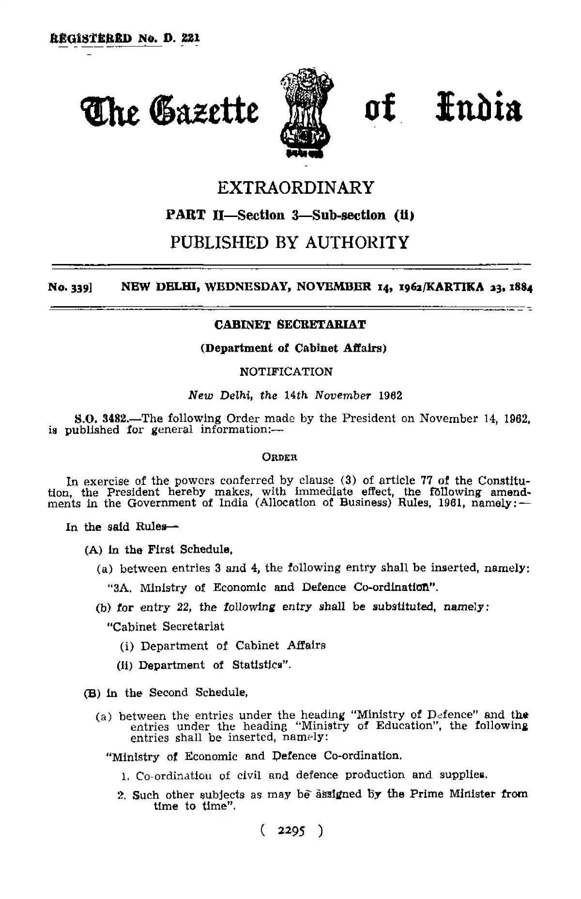
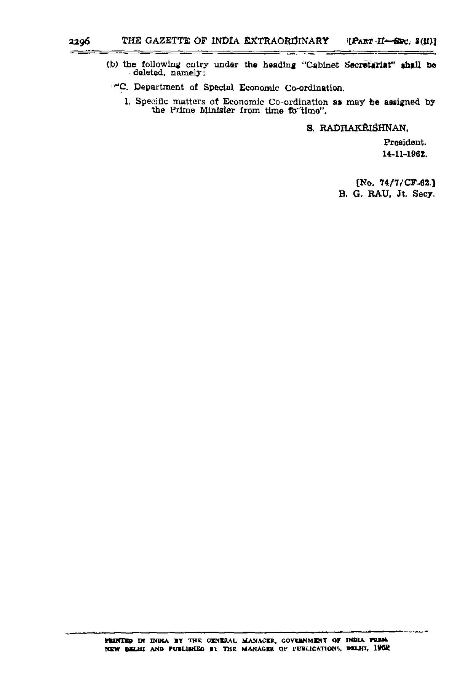

Amendment #12 (S.O. 3482, 1962)
4 changes: 2 to the First Schedule, 2 to the Second Schedule. 4 applied
What it did to the ministries
- bornMinistry of Economic and Defence Co-ordination is created (2 subjects) change 1, 3 · histories: Supply
The order, page by page
Page 1 of 2

123after Schedule 1 › entry 3
- 3A. Ministry of Economic and Defence Co-ordination
applied at schedule 1 › ministry 3A in the Rules after #12
read hindi missing
Schedule 1 › entry 22
- Cabinet Secretariat
- i. Department of Cabinet Affairs
- ii. Department of Statistics
applied at schedule 1 › department 22 in the Rules after #12
read hindi missing, states inferred number kept
after Schedule 2 › Ministry of Defence
- Ministry of Economic and Defence Co-ordination.
- 1. Co-ordination of civil and defence production and supplies.
- 2. Such other subjects as may be àssigned by the Prime Minister from time to time
applied at schedule 2 › ministry Ministry of Economic and Defence Co-ordination in the Rules after #12
read hindi missing
Page 2 of 2

4Schedule 2 › Cabinet Secretariat › Department of Special Economic Co-ordination.
applied at schedule 2 › ministry CABINET SECRETARIAT › department C in the Rules after #12
states inferred loose
How this document was read
Edits to the reading
| Date | By | Edit | Before → after |
|---|---|---|---|
| 12 November 2026 | claude | word corrected |
Changes placed by an inference rule
| Change | Rule | Status | What |
|---|---|---|---|
| 2 | number_kept | accepted | change 2: schedule 1 › department Cabinet Secretariat: keeps its number 22, the heading put for it quoted without one |
| 4 | loose | accepted | change 4: department Department of Special Economic Co-ordination. taken for department Department of Special Economic Co-ordination. Specific matters of economic co-ordination as may be assigned by… |
From the Government of India (Allocation of Business) Rules, 1961 and their amendments, as published by the Cabinet Secretariat (cabsec.gov.in), read by orgpedia. The readings of the older scanned gazettes have known gaps.